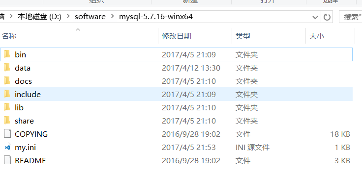

大二数据库原理的作业，发现还存在电脑里，于是稍微整理下放到博客里。
windows下mysql安装
我下载的是zip压缩包，假设解压到D:\software目录下，官网下载的只有服务端和简单的shell，可以去搜索Navicat客户端，支持多种数据库管理系统，下载MySQL客户端，也支持MariaDB使用。
注意：Navicat是收费的，免费使用14天。你还可以使用其他客户端，比如phpAdminMySQL。
mysql的简单配置
mysql的目录结构如下

环境变量需要配置bin目录，mysql的程序都在bin目录下，所以环境变量是在PATH变量上新增D:\software\mysql\bin。
各个版本目录可能不同，data目录存放系统数据，一开始应该没有，需要自己新建。
另一个重要的是my.ini文件(或my-default.ini)，需要进行一些简单的配置才能使用。
[mysql]
# 设置mysql客户端默认字符集
default-character-set = utf8
[mysqld]
#skip_grant_tables 这个先不要，这是忽略权限。
#设置3306端口
port = 3306
# 设置mysql的安装目录
basedir = "D:/software/mysql-5.7.16-winx64"
# 设置mysql数据库的数据的存放目录
datadir = "D:/software/mysql-5.7.16-winx64/data"
# 允许最大连接数
max_connections = 200
# 服务端使用的字符集默认为8比特编码的latin1字符集，我们改为通用的utf8
character-set-server = utf8
# 创建新表时将使用的默认存储引擎
default-storage-engine = INNODB
常用的2个程序是mysql和mysqld，需要给服务端设置一些配置，如上，语法跟作用一目了然。
windows下运行mysql需要使用cmd管理员权限，使用net start mysql 启动mysql服务，net stop mysql 关闭服务。
一开始需要使用root帐号登录，不需要密码，在命令行下使用mysql -u root -p登录，进入shell后可以使用help命令查看简单的用法。
具体其他使用方法请查看文档手册或者搜索引擎。
Navicat 客户端简单使用
按照安装包的引导安装即可。

注意使用期限是14天。

Navicat界面比较简洁，也只提供基本的功能，如需要使用强大的功能可能需要购买或使用其他客户端。
Navicat窗口帮助下可以打开本地中文文档，可以查看各种数据库的使用。
在文件下建立数据库连接写好帐号密码即可连接（不要忘记先在cmd管理员权限下启动mysql服务）。
然后可以简单的开始操作DBMS了。

linux ubuntu 命令行下mysql安装
我选择最简单的安装方式

如上，用sudo apt install mysql-server-5.7下载
当然你可以先用图形界面找到需要的版本的包或者路径，用wget等工具下载，这里不详细说明，总体思路跟windows下是一致的。
用 whereis mysql 命令查看mysql等命令已经添加到环境变量中。

如图，用sudo service mysql start 启动，即使远程连接断开也在后台运行，mysql -u root -p登录root用户连接mysql，可以用ps -ef | grep mysql 来查看。

登录以后，在mysql下用show variables like 'character% 可以查看一些字符相关的环境配置，发现很多是latin1编码，我们需要改为utf8编码
我们来到/etc/mysql目录下，这里存放许多mysql的配置。我们修改一些配置sudo vim mysql.conf.d/mysqld.cnf，在[mysqld]下配置character-set-server = utf8，当然在这里你还可以修改一些其他配置。
继续修改另外一个配置sudo vim conf.d/mysql.cnf，在[mysql]下配置default-character-set = utf8，这样重启mysql后字符编码就改变了如下：
以上，最基本的配置就完成了，大概作为学习用途已经足够了，再复杂的配置得参考相应的资料了。